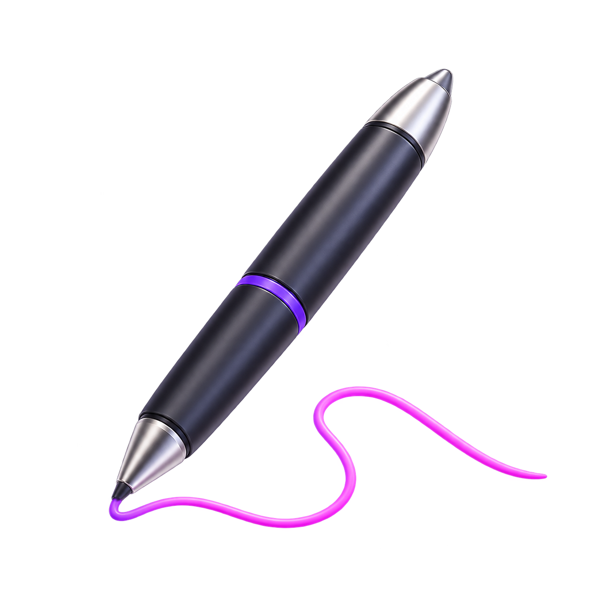
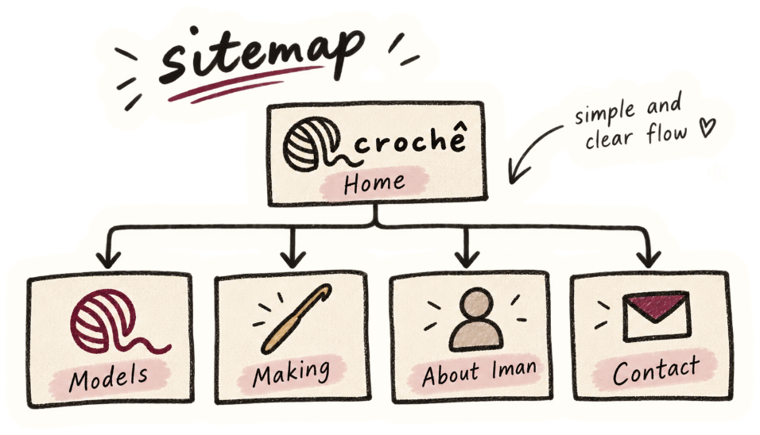
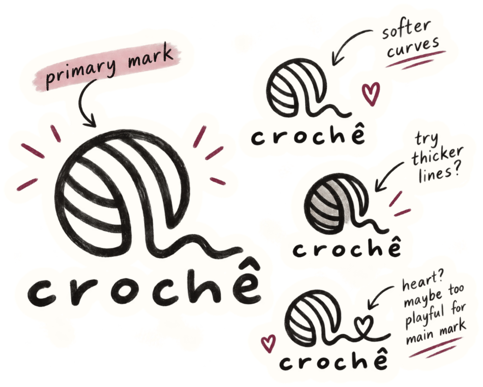
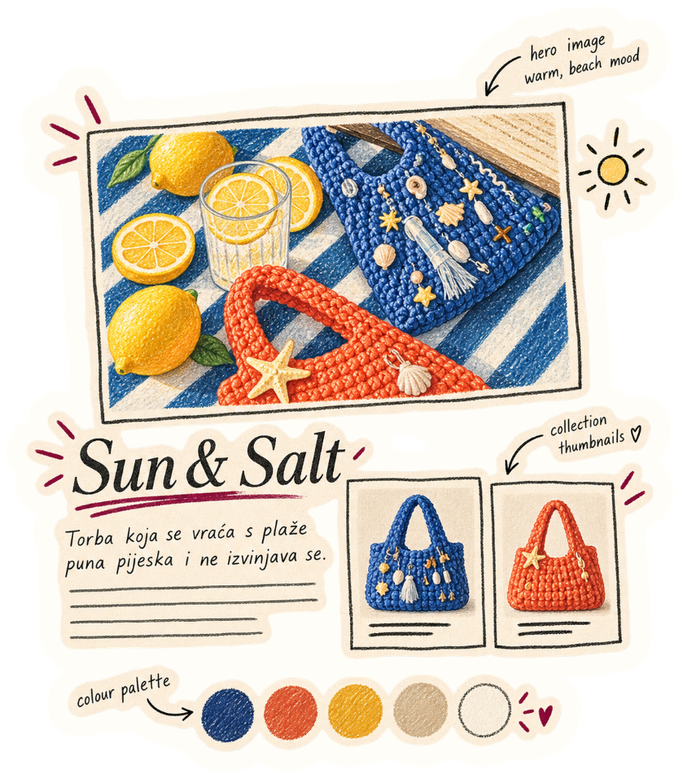
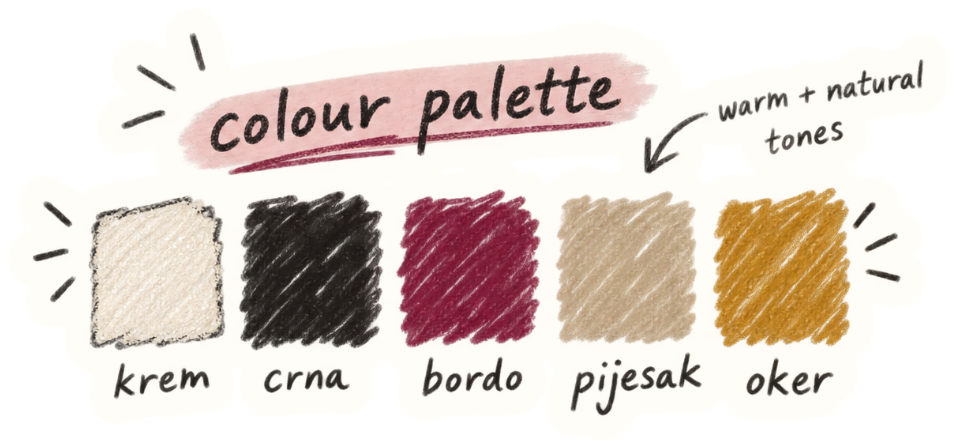
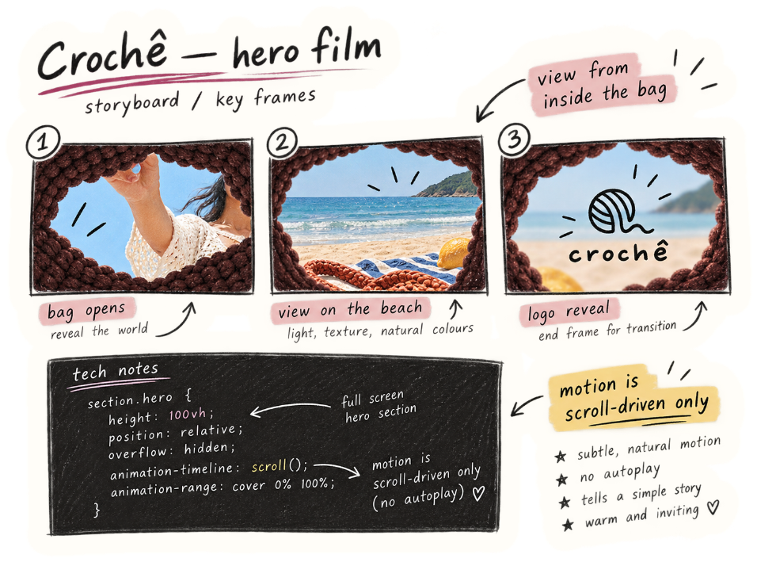
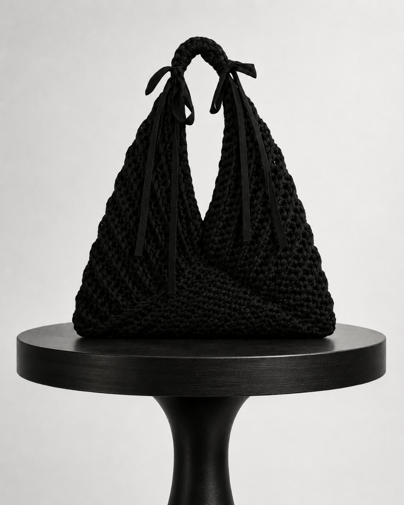
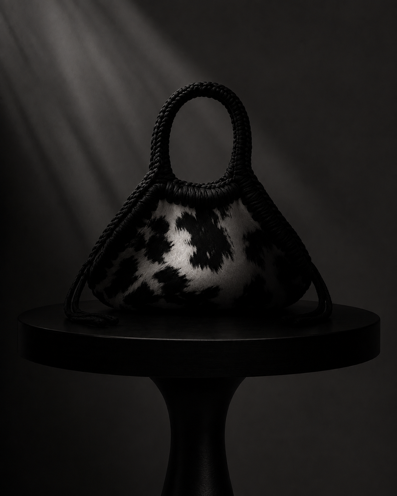
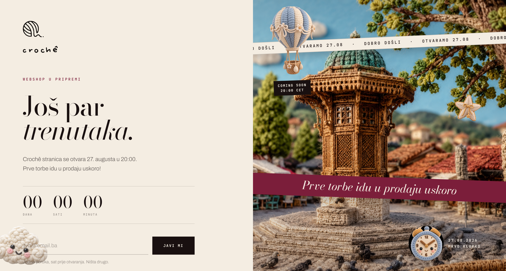
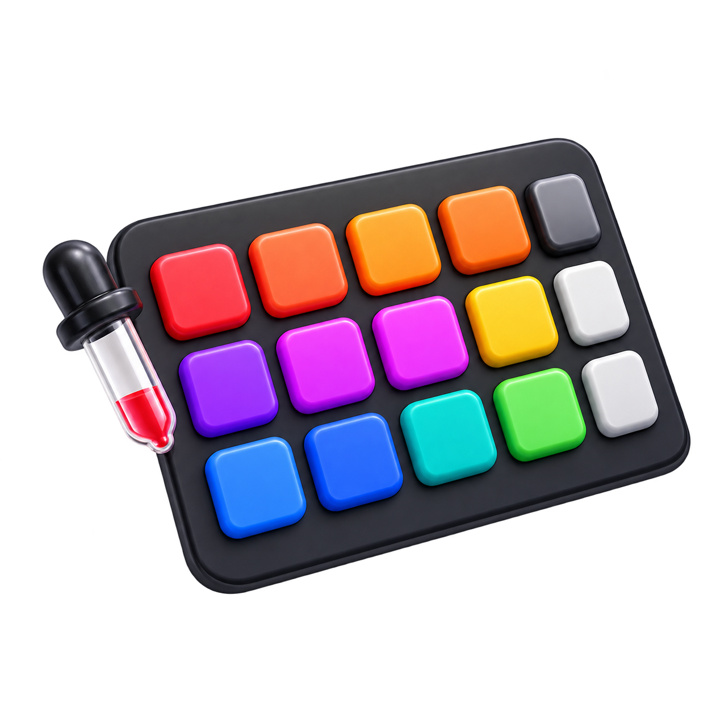

From a pencil line to thousands of orders
Five steps, in order, every time. Here's what they looked like for Crochê, a one-woman bag studio in Sarajevo, start to finish.
Plan it out
Before any screen, we wrote down how it should behave. For Crochê that started with the homepage film: a view from inside the bag, onto the beach, played by the scroll and never on its own.







Take it digital
The plan became a system: nine colour roles and one wine accent, Bodoni for names, a mono for every price, and a voice with short sentences and no exclamation marks.
Engineer it
Then it got built for real: the homepage, both order tracks and the owner panel in React, with the catalogue and orders in Supabase. No media queries in the order flow, just grids that hold down to 320 px.
 Clutchfrom 54 KM
Clutchfrom 54 KM Squarefrom 62 KM
Squarefrom 62 KM
Trianglefrom 58 KM
Square
from 62 KMMade to order
CHOOSE A SIZE ↗

AT LAUNCH Special Revealed on 27.08. at 20:00 LET ME KNOWPolish it
A nice site is not the same as a working one. We tested every state: slow loads, a fourth yarn pick, a bag marked finished without a photo, an order shipped with no tracking number.
Ship it
Then it goes live. A coming-soon page with a countdown and signup, a 51-second reel for Instagram and TikTok, and the shop opening on 27 August at 20:00.


At every phase we are fully with you, providing only the best.
Start a project